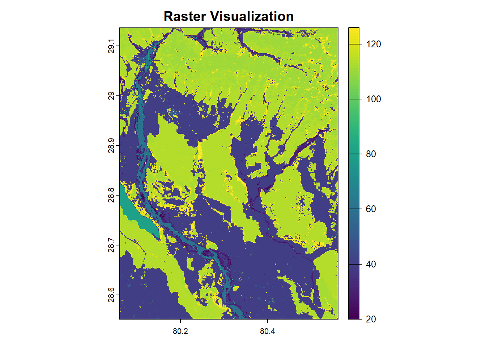
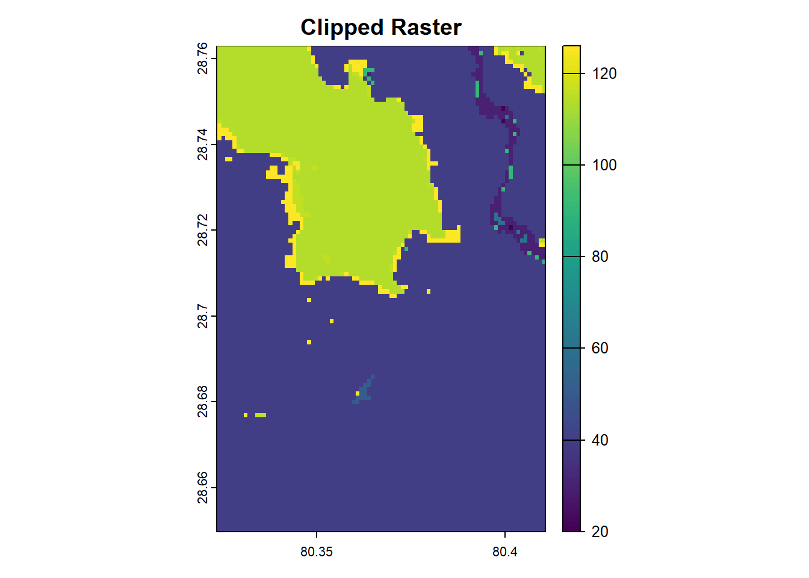
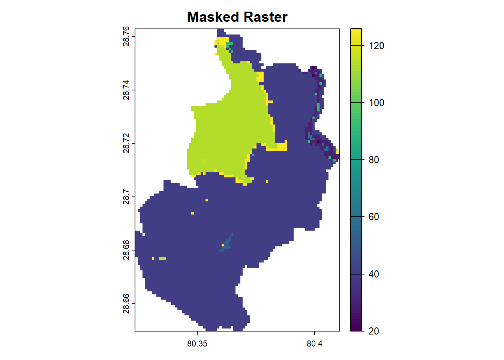
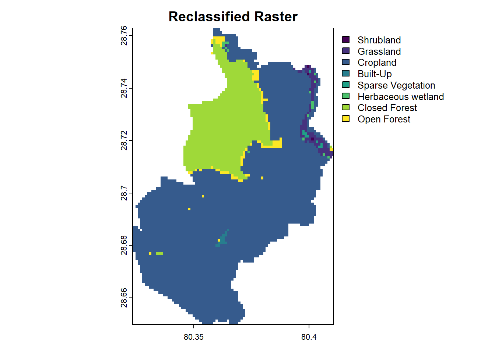
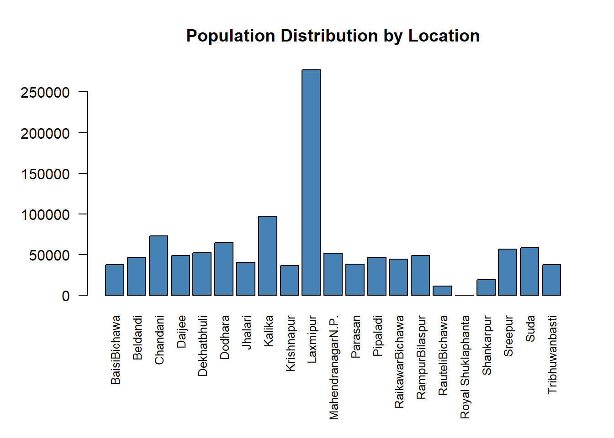

Last updated: 2025-01-02
Checks: 7 0
Knit directory: R_tutorial/
This reproducible R Markdown analysis was created with workflowr (version 1.7.1). The Checks tab describes the reproducibility checks that were applied when the results were created. The Past versions tab lists the development history.
Great! Since the R Markdown file has been committed to the Git repository, you know the exact version of the code that produced these results.
Great job! The global environment was empty. Objects defined in the global environment can affect the analysis in your R Markdown file in unknown ways. For reproduciblity it’s best to always run the code in an empty environment.
The command set.seed(20241223) was run prior to running
the code in the R Markdown file. Setting a seed ensures that any results
that rely on randomness, e.g. subsampling or permutations, are
reproducible.
Great job! Recording the operating system, R version, and package versions is critical for reproducibility.
Nice! There were no cached chunks for this analysis, so you can be confident that you successfully produced the results during this run.
Great job! Using relative paths to the files within your workflowr project makes it easier to run your code on other machines.
Great! You are using Git for version control. Tracking code development and connecting the code version to the results is critical for reproducibility.
The results in this page were generated with repository version 08ce7da. See the Past versions tab to see a history of the changes made to the R Markdown and HTML files.
Note that you need to be careful to ensure that all relevant files for
the analysis have been committed to Git prior to generating the results
(you can use wflow_publish or
wflow_git_commit). workflowr only checks the R Markdown
file, but you know if there are other scripts or data files that it
depends on. Below is the status of the Git repository when the results
were generated:
Ignored files:
Ignored: .Rhistory
Ignored: .Rproj.user/
Untracked files:
Untracked: data/raster/reclassified.tif
Untracked: data/raster/reclassified.tif.aux.xml
Note that any generated files, e.g. HTML, png, CSS, etc., are not included in this status report because it is ok for generated content to have uncommitted changes.
These are the previous versions of the repository in which changes were
made to the R Markdown
(analysis/Basic_Operations_with_Raster_Data.Rmd) and HTML
(docs/Basic_Operations_with_Raster_Data.html) files. If
you’ve configured a remote Git repository (see
?wflow_git_remote), click on the hyperlinks in the table
below to view the files as they were in that past version.
| File | Version | Author | Date | Message |
|---|---|---|---|---|
| Rmd | 08ce7da | Ohm-Np | 2025-01-02 | wflow_publish("analysis/Basic_Operations_with_Raster_Data.Rmd") |
| html | f631618 | Ohm-Np | 2024-12-31 | Build site. |
| html | a7faec7 | Ohm-Np | 2024-12-29 | Build site. |
| Rmd | 777eca0 | Ohm-Np | 2024-12-29 | wflow_publish("analysis/Basic_Operations_with_Raster_Data.Rmd") |
| html | 7d70ba7 | Ohm-Np | 2024-12-28 | Build site. |
| Rmd | 6c19bd7 | Ohm-Np | 2024-12-28 | wflow_publish("analysis/Basic_Operations_with_Raster_Data.Rmd") |
Raster data represents continuous spatial information such as elevation, temperature, or land cover. The terra package provides efficient tools for working with raster data, allowing users to visualize, analyze, and manipulate raster layers. Few common operations include plotting, reclassification, clipping and masking among thers. These operations enable users to extract specific information and tailor raster datasets to their analysis needs.
Visualizing raster data is often the first step in understanding its structure and distribution. With terra, the plot() function can be used to quickly render raster layers. It creates intuitive visualizations, often with automatically chosen color palettes that reflect the range of values in the data. For this section, we will use ESA Land Cover raster data from year 2015, which can be downloaded by clicking this link.
# Load the terra and dplyr package
library(terra)
library(dplyr)
# Import a raster dataset
lc_2015 <-
rast("data/raster/landcover_2015.tif")
# Plot the raster data
plot(lc_2015,
main = "Raster Visualization")
| Version | Author | Date |
|---|---|---|
| 7d70ba7 | Ohm-Np | 2024-12-28 |
As seen in the plot above, the cell values range from 20 to over 120.
Clipping a raster limits its extent to a specific area of interest. It helps reduce file size and ensures analysis is focused on relevant regions. In terra, clipping can be performed using the crop() function, which takes a raster and a bounding box or spatial object to define the extent.
# Import a sf object which you have already downloaded i.e. Sreepur gpkg
library(sf)
spr <-
read_sf("data/vector/sreepur.gpkg")
# Clip the raster
lc_2015_crop <-
terra::crop(lc_2015, spr)
# Plot the clipped raster
plot(lc_2015_crop,
main = "Clipped Raster")
| Version | Author | Date |
|---|---|---|
| 7d70ba7 | Ohm-Np | 2024-12-28 |
Masking modifies a raster by setting values outside a specified region to NA. This operation is particularly useful for applying spatial masks, such as land polygons, to exclude unwanted areas like oceans. The mask() function achieves this by combining a raster and a spatial object (e.g., vector polygons).
# Mask the raster
lc_2015_mask <-
terra::mask(lc_2015_crop,
spr)
# Plot the clipped raster
plot(lc_2015_mask,
main = "Masked Raster")
| Version | Author | Date |
|---|---|---|
| 7d70ba7 | Ohm-Np | 2024-12-28 |
Masking helps refine raster datasets by focusing on specific areas or excluding irrelevant regions.
Reclassification involves categorizing raster cell values into meaningful classes. For example, a raster of population count values can be reclassified into categories such as “Low,” “Medium,” and “High.” And a raster of Land cover values can be reclassified into their original land cover type categories. The classify() function in terra simplifies this process by applying specified rules to the raster.
Before performing reclassification, we need to determine the exact values (min, max) of the raster.
# determine minimum and maximum values from the masked raster
terra::minmax(lc_2015_mask)[1:2, ]min max
20 126 # determine the unique values in the raster, as each cell value in the land cover data represents a different land cover type
table(unique(values(lc_2015_mask)))
20 30 40 50 60 90 114 116 124 126
1 1 1 1 1 1 1 1 1 1 As we can see, there are 10 different values within the masked raster, indicating that there are 10 distinct land cover types within the Sreepur polygon.
The ESA Product User Manual provides essential information on their data products, data values, and corresponding land cover types. For your convenience, I have listed all 23 discrete classes below.
20 - Shrubland, 30 - Grassland, 40 - Cropland, 50 - Built-up, 60 - Bare/Sparse Vegetation, 70 - Snow and Ice, 80 - Permanent Water Bodies, 90 - Herbaceous Wetland, 100 - Moss, 111 - Closed Forest Evergreen Needle Leaf, 112 - Closed Forest Evergreen Broad Leaf, 113 - Closed Forest Deciduous Needle Leaf, 114 - Closed Forest Deciduous Broad Leaf, 115 - Closed Forest Mixed, 116 - Closed Forest Unknown, 121 - Open Forest Evergreen Needle Leaf, 122 - Open Forest Evergreen Broad Leaf, 123 - Open Forest Deciduous Needle Leaf, 124 - Open Forest Deciduous Broad Leaf, 125 - Open Forest Mixed, 126 - Open Forest Unknown, 200 - Open Sea & 0 - Empty
However, for this tutorial and our specific area of ineterst, we will use only the necessary classes and modify them for our convenience.
# Reclassify raster values into new categories
# Define reclassification rules: from-to, new value
rules <- matrix(c(19, 21, 1,
29, 31, 2,
39, 41, 3,
49, 51, 4,
59, 61, 5,
89, 91, 6,
113, 117, 7,
123, 127, 8),
ncol = 3, byrow = TRUE)
# Apply reclassification on masked raster
reclassified_raster <- terra::classify(lc_2015_mask,
rules)
# Convert the numeric raster to a factor (or character) with labels
levels(reclassified_raster) <- data.frame(value = c(1, 2, 3, 4, 5, 6, 7, 8),
label = c("Shrubland", "Grassland", "Cropland", "Built-Up",
"Sparse Vegetation", "Herbaceous wetland", "Closed Forest", "Open Forest"))
# Plot the reclassified raster
plot(reclassified_raster, main = "Reclassified Raster")
| Version | Author | Date |
|---|---|---|
| 7d70ba7 | Ohm-Np | 2024-12-28 |
Working with raster data often involves visualizing the dataset, reclassifying values into meaningful categories, and refining spatial coverage through clipping and masking. The terra package provides powerful tools to perform these operations efficiently. These capabilities allow users to tailor raster datasets to their specific analytical needs, enabling effective geospatial analysis.
We can use the writeRaster() function from the
terra package to save raster data to a file.
# Save reclassified raster data as a GeoTIFF file
terra::writeRaster(reclassified_raster,
"data/raster/reclassified.tif",
overwrite = TRUE)Zonal statistics is a technique in spatial analysis used to summarize raster values within specified zones, defined by a vector dataset (e.g., polygons). This operation is essential for combining raster data (e.g., elevation, land cover) with vector zones (e.g., administrative boundaries, land parcels). Some of the common applications of zonal statistics are:
With the terra package, you can compute various statistics, such as: mean, sum, min/max, majority, variance, and standard deviation.
In this section, we will calculate the total population count across the various zones of Kanchanpur district using sum function. Download the population count raster from year 2020 by clicking this link.
# Load raster data
pop_count2020 <-
rast("data/raster/popCount_2020.tif")
# Load vector data as a SpatVector using the 'vect' function from the terra package
zones <-
vect("data/vector/kanchanpur.gpkg")
# Extract zonal statistics: Calculate sum of raster values for each zone
zonal_stats <-
extract(pop_count2020,
zones,
fun = sum,
na.rm = TRUE)
# Since zonal stats only shows polygons as ID, lets retrieve the name of polygons from the spatVector
# We will learn more about data frames in next chapters
zonal_stats$NAME <-
zones$NAME
# rename column
colnames(zonal_stats)[colnames(zonal_stats) == "npl_ppp_2020_UNadj"] <-
"Population"
# View few of the results
head(zonal_stats) ID Population NAME
1 1 37900.04 BaisiBichawa
2 2 46565.36 Beldandi
3 3 72813.01 Chandani
4 4 49223.93 Daijee
5 5 52221.74 Dekhatbhuli
6 6 64436.56 DodharaLets create a barplot to analyze the population values within the zones.
# Adjust margins (bottom margin = 8 lines, left = 5, top = 4, right = 2)
par(mar = c(8, 5, 4, 2))
# plot the zonal stats
barplot(zonal_stats$Population,
names.arg = zonal_stats$NAME,
col = "steelblue",
las = 2, # Rotate axis labels for better readability
cex.names = 0.8, # Decrease label size
main = "Population Distribution by Location")
| Version | Author | Date |
|---|---|---|
| a7faec7 | Ohm-Np | 2024-12-29 |
From the barplot above, we can see that Laxmipur is the most densely populated region, while Royal Shuklaphanta is the least populated region in Kanchanpur district.
Note: The sf and terra packages provide functions for loading vector data, such as polygons, but they handle the data differently based on their internal design and intended use cases. Below are the basic differences when loading polygon data using sf::read_sf() and terra::vect():
| read_sf() | vect() |
|---|---|
| Designed for handling vector data exclusively. | Designed for both raster and vector data operations. |
| Focuses on simple features and integrates seamlessly with other R packages for spatial analysis (e.g., tidyverse). | Built for efficient handling of large spatial datasets, especially when working with both raster and vector layers. |
| Outputs objects of class sf. | Outputs objects of class SpatVector. |
For this tutorial, this concludes the coverage of raster data operations. If you would like to explore additional operations, examples, or need clarification on any of the steps covered, please visit the GitHub repository: R_tutorial and feel free to open an issue.
sessionInfo()R version 4.4.0 (2024-04-24 ucrt)
Platform: x86_64-w64-mingw32/x64
Running under: Windows 11 x64 (build 22631)
Matrix products: default
locale:
[1] LC_COLLATE=English_Germany.utf8 LC_CTYPE=English_Germany.utf8
[3] LC_MONETARY=English_Germany.utf8 LC_NUMERIC=C
[5] LC_TIME=English_Germany.utf8
time zone: Europe/Berlin
tzcode source: internal
attached base packages:
[1] stats graphics grDevices utils datasets methods base
other attached packages:
[1] sf_1.0-19 dplyr_1.1.4 terra_1.8-5 workflowr_1.7.1
loaded via a namespace (and not attached):
[1] sass_0.4.9 utf8_1.2.4 generics_0.1.3 class_7.3-22
[5] KernSmooth_2.23-22 stringi_1.8.4 digest_0.6.36 magrittr_2.0.3
[9] evaluate_0.24.0 grid_4.4.0 fastmap_1.2.0 rprojroot_2.0.4
[13] jsonlite_1.8.8 processx_3.8.4 whisker_0.4.1 e1071_1.7-16
[17] DBI_1.2.3 ps_1.8.1 promises_1.3.0 httr_1.4.7
[21] fansi_1.0.6 codetools_0.2-20 jquerylib_0.1.4 cli_3.6.3
[25] rlang_1.1.4 units_0.8-5 cachem_1.1.0 yaml_2.3.10
[29] tools_4.4.0 httpuv_1.6.15 vctrs_0.6.5 R6_2.5.1
[33] proxy_0.4-27 lifecycle_1.0.4 classInt_0.4-10 git2r_0.33.0
[37] stringr_1.5.1 fs_1.6.4 pkgconfig_2.0.3 callr_3.7.6
[41] pillar_1.9.0 bslib_0.8.0 later_1.3.2 glue_1.7.0
[45] Rcpp_1.0.13 xfun_0.47 tibble_3.2.1 tidyselect_1.2.1
[49] highr_0.11 rstudioapi_0.16.0 knitr_1.48 htmltools_0.5.8.1
[53] rmarkdown_2.28 compiler_4.4.0 getPass_0.2-4